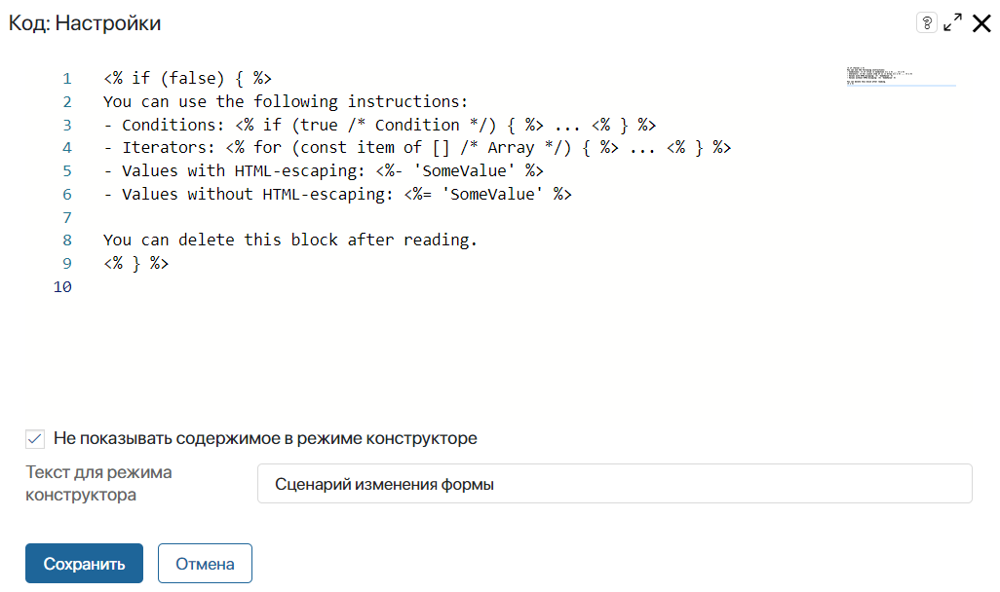
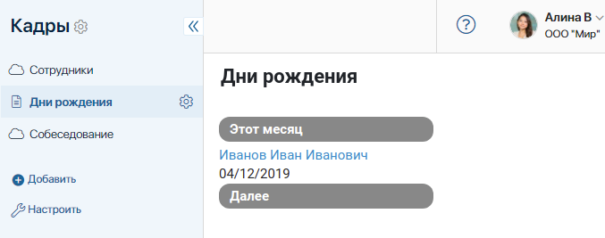

Виджет Код позволяет работать с HTML кодом. Например, можно выделить цветом элементы формы или отобразить на странице данные из ELMA365 и других систем. Кроме того, при помощи этого виджета вы можете добавить скрипты на форму или страницу, а также создать динамические формы в процессе или приложении.
начало внимание
Использование констант Global или Namespace в скриптах ограничивает экспорт компонентов системы. Подробнее об этом читайте в статье «Глобальные константы в скриптах».
конец внимание
Добавление виджета
Чтобы разместить виджет, перетащите его с правой панели дизайнера интерфейсов на поле для моделирования или нажмите кнопку +Виджет. Подробнее читайте в статье «Шаблон формы».
В открывшемся окне настроек вы можете добавить на форму HTML код, формируемый динамически с помощью специальных вставок.

Отметьте опцию Не показывать содержимое в режиме конструктора и задайте название скрипта, чтобы на поле для моделирования не отображался составленный вами код.
Конструкции для вставок кода
В виджете Код используется синтаксис, позволяющий делать вставки трёх видов:
<%Конструкции, объявления%>— примеры будут рассмотрены ниже.<%- Вывод значения с экранированием HTML-символов %>— например, если в значении встречается знак «<», то в таком виде он и будет выведен.<%= Вывод значения без экранирования HTML-символов %>— например, если задано значение<b>Внимание!</b>, то будет выведен текст «Внимание!» (с выделением жирным).
Далее рассмотрим применение вставок первого вида.
Условия
<% if (data.Value > 10) { %>
// Здесь содержимое, которое нужно отобразить
<% } %>
Условия if-else
<% if (true) { %>
// Здесь содержимое, которое нужно отобразить
<% } else { %>
// Здесь содержимое, которое нужно отобразить
<% } %>
Циклы
<% for (const item of data.items) { %>
// Здесь содержимое, которое нужно отобразить
<% } %>
Объявления (например, функция)
<% function renderValueInTag(value, tag) { %>
<<%= tag %>>
<%- value %>
</<%= tag %>>
<% } %>
Вызов функции из клиентского скрипта
С помощью конструкции <%= Scripts %>.ИМЯ_ФУНКЦИИ() из виджета Код можно вызывать клиентский скрипт, созданный на языке TypeScript и добавленный в дизайнере интерфейсов на вкладке Скрипты.
Например, при нажатии кнопки Открыть будет исполнен скрипт с наименованием OpenPopup.
<button onclick="<%= Scripts%>.OpenPopup()">Открыть</button>
Отображение других виджетов через виджет «Код»
Вы можете добавлять в код вставки для отображения пользовательских и некоторых системных виджетов, используя контекстное меню. Тогда вам не придётся писать код вставки вручную. Применяйте этот способ, например, когда нужно повторно использовать виджеты.
Так, настраивая страницу просмотра товара, вы размещаете на ней пользовательский виджет с фотографией товара, ценой и ссылками на его характеристики. При этом вы хотите вынести на страницу такие же виджеты, но с информацией о других товарах, близких по ценовой категории. То есть вам нужно переиспользовать пользовательский виджет, который уже используется на странице другого товара.
В этом случае, настраивая страницу с помощью виджета Код, в контекстном меню скрипта выберите опцию Добавить виджет. Затем в открывшемся окне выберите виджет, который хотите использовать. Вставка с текстом кода автоматически добавится в скрипт.
Пример вставки для отображения пользовательского виджета:
<%= UI.widget.render('@custom_widget', {title: Context.data.title, notes: "Примечание"}) %>
В этой опции доступны виджеты Вкладки, Выпадающее меню, Выпадающее окно и Панель с заголовком, а также пользовательские виджеты, созданные на том же уровне, что форма или страница. Например, работая с виджетом Код на странице раздела, в опции Добавить виджет вы можете выбрать пользовательские виджеты, созданные в этом разделе, а также на формах и страницах приложений этого раздела.
Вы можете включить доступ к пользовательским виджетам других разделов. Для этого на панели инструментов дизайнера нажмите кнопку Настройки и включите опцию Разрешить использование всех элементов. Обратите внимание, это ограничивает возможность экспорта приложения или раздела.
Пример использования виджета
При помощи скрипта в виджете Код можно получить информацию из приложения Сотрудники, чтобы отображать на странице имена пользователей с днями рождения в текущем месяце.

async function onInit():Promise <void> { |
Для вывода значения контекстной переменной в виджете Код, используйте вставку вида:
<%= UI.widget.contextValue ('currentMonth', {readonly:true}) %>
При этом currentMonth — это контекстная переменная типа Таблица, в которую с помощью функции OnInit() записаны пользователи с днями рождения в текущем месяце. Функция выполняется, когда пользователь открывает страницу.
Подробнее о методах вывода в виджете Код можно прочитать в справке ELMA365 TS SDK в статьях «API для отображения стандартных виджетов» и «Виджет „Код“».